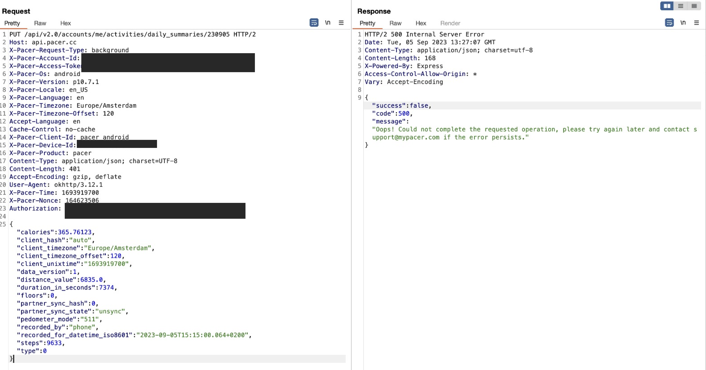

How to walk in Steptember
Recently a company I work for started a charity event where it challenges its employees to reach 70.0000.000 steps in one month. An external app is required to be installed on your phone and will be used to count the steps made each day. If the goal is reached the amount of donation that was to be made will be doubled.
Naturally I was really excited to have the opportunity to contribute to such a noble cause.

Unfortunately, I'm not really a walker so I decided to see if I could do something with the app. With a proxy tool, I found the request the app is making to the server with the amount of steps you made each day. Sadly, it wasn't as easy as changing the step value in the request to achieve a much higher step amount than what you actually walked.

Request by the app to the server with the amount of steps made in the body.
It seems the app is generating a hash when the request is made, and if anything in the request is altered it fails the check on the server-side (as seen above). It would probably take me considerably more effort to reverse the method they use to create the hash than just to take the 10K steps :).

Snippet of the code from the apk that is responsible for checking if you didn't mess with the values.
I started to play around with the app in the emulator and tried to set a gps route and see if that would work. The app did actually register the distance walked but it didn't register any steps. After some digging I found that making specific changes to the gyroscope/accelaration sensors in the emulator is needed to simulate a walking motion. So with the help of Chat-GTP I wrote and tweaked a script that continously changes these sensor values and effectively 'walks' while the emulator is running.

The script running in the background changing the sensor values in the emulator.

The scoreboard before I pulled out.
But after seeing all my colleagues doing their best, walking morning and night for a good cause and cheering each other on, while I was sitting on my lazy ass trying to win made me think about my actions. My consience kicked in and I decided to pull out of the race. Either way, it was fun playing around with the emulator and we learned some lessons along the way.
If interested, check out my repo: fakestepsandroid (use responsibly)